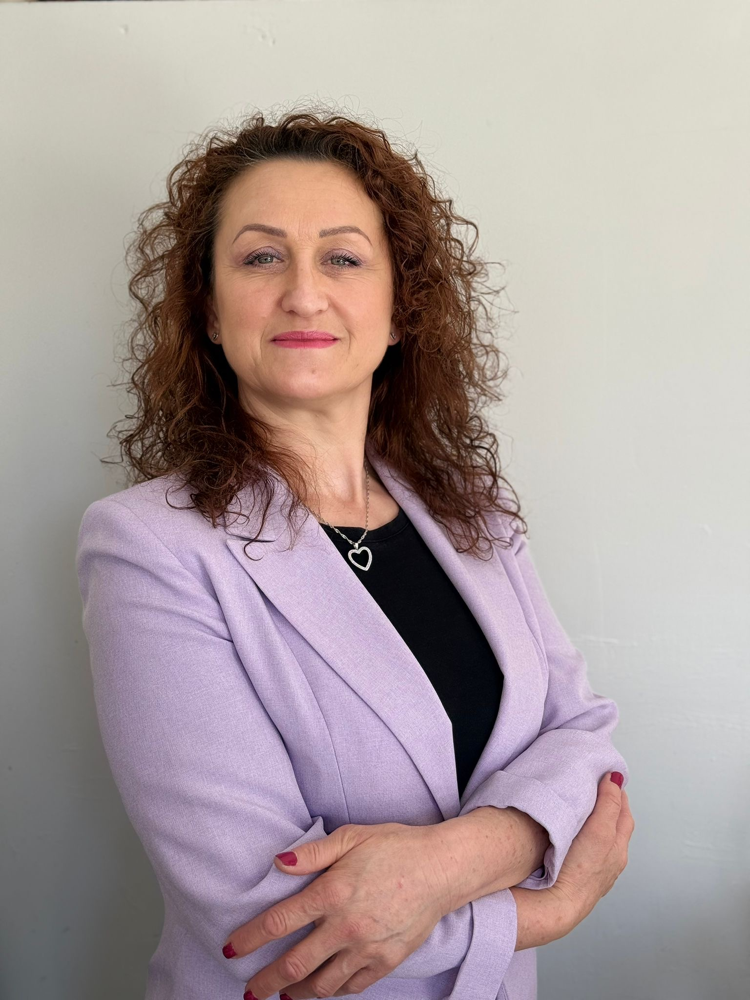

Постоянна възможност
Индивидуална сесия
Лична психологическа работа върху ситуацията, която е важна за теб.
60 минути · 50 евро · Zoom Избери свободен часИндивидуална психологическа подкрепа онлайн
Понякога не ти трябва още един съвет. Нужно е спокойно да видиш какво всъщност те задържа и коя е следващата стъпка, която можеш да направиш.
Може би разпознаваш това
Един ден си сигурна какво искаш. На следващия започваш отначало.
Чакаш момента, в който ще бъдеш напълно сигурна — а седмиците минават и ти оставаш на същото място.
Понякога не ти трябва още един съвет. Трябва да разбереш какво те държи там.
Моят начин на работа
Какво реално се случва, без веднага да се обвиняваш или плашиш.
Къде е истинското напрежение под първия видим отговор.
Кое е факт, кое е страх и какво поддържа стоенето на едно място.
Една достатъчно малка и реална стъпка, с която започва движението.

За мен
Психолог съм и работя с хора, които искат да разберат какво ги спира и да намерят посока за промяната, която отлагат.
Имам бакалавърска степен по психология и професионални квалификации по интегративна психотерапия и по невропсихология, психопатология и терапия от Медицински университет – Пловдив.
Обучавам се в майсторско ниво по позитивна психотерапия и работя под супервизия.
Можем да поговорим, ако
Важна граница
Работата не поставя медицинска диагноза и не замества лекар, психиатър или спешна помощ. При непосредствен риск или остро състояние потърси местната спешна служба или подходящ медицински специалист.
Предстоящо пространство
За хората, които искат да променят нещо конкретно в живота си, но още стоят на кръстопът и не знаят как да направят следващата крачка.
Форматът се създава според реалните въпроси и нужди от разговорите с аудиторията — без готови обещания и програми, които никой не е поискал.
Списък с интерес
Остави имейл и ще получиш информация, когато концепцията и първата програма са готови.
Без въпроси за здраве или лични ситуации. Формата ще бъде активирана след избора на сигурна имейл услуга.Начини да започнеш
Постоянна възможност
Лична психологическа работа върху ситуацията, която е важна за теб.
60 минути · 50 евро · Zoom Избери свободен часОнлайн записване
Календарът показва само свободните часове. След записването ще получиш потвърждение и Zoom информация по имейл, а часът автоматично се блокира в календара на Елфида.
Какво следва
Календарът показва свободните часове в твоето местно време.
Потвърждението идва по имейл. Не е нужно да описваш личния си проблем във формата.
След срещата решаваш дали искаш следваща сесия. Няма задължителен пакет.
Често задавани въпроси
50 евро за 60 минути. Плащането и условията за отмяна ще бъдат потвърдени при записването.
Онлайн в Zoom и на български език. Ще получиш индивидуален линк след записването.
Не. Формата за записване ще събира само данните, необходими за часа и потвърждението. Личната тема остава за защитения разговор.
Не. Това е психологическа подкрепа и не включва медицинска диагноза или лечение. При физически симптоми или медицински въпроси е важно да разговаряш с лекар.
Не. След първата сесия сама решаваш дали индивидуалната работа е подходяща за теб.